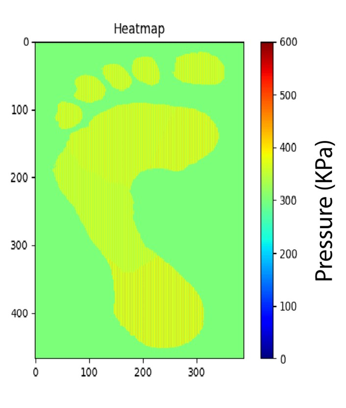
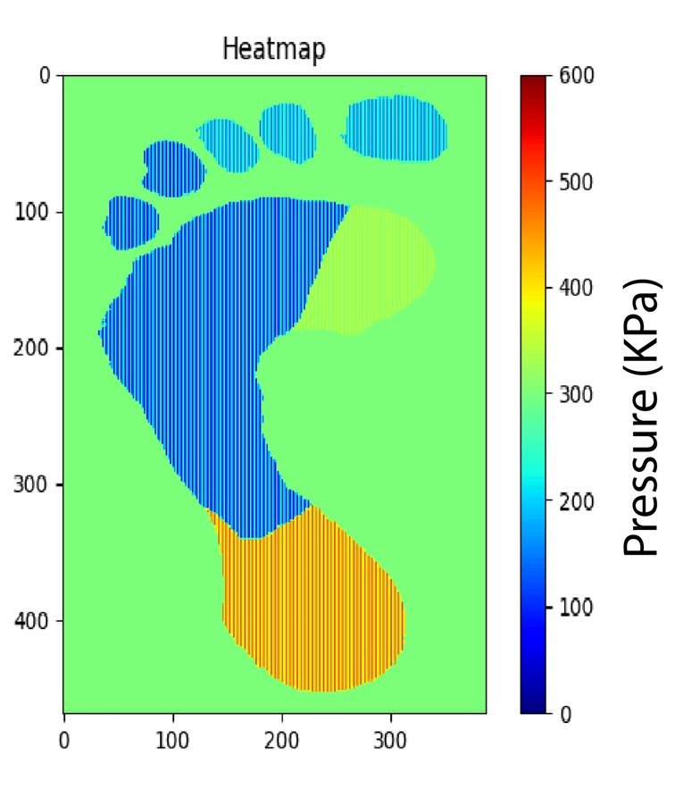
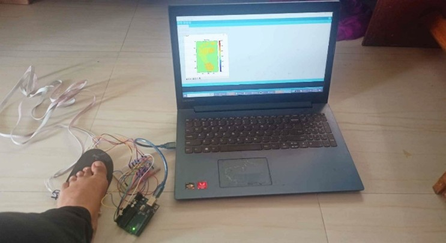

In-sole Foot Pressure Sensor System
Click maps to view full-resolution pressure distribution data.

Pressure map of the healthy subject

Pressure map of a subject with foot abnormalities

Data collection procedure of our insole pressure monitoring system
Project Summary
This research presents a user-friendly and cost-effective baropodometry system designed for early diagnosis of gait abnormalities. By utilizing force-sensing resistors capable of detecting 100g–10kg of force, the system identifies specific troublesome regions of the foot by mapping pressure intensity to color variations.
Key Findings:
- Healthy subjects showed consistent pressure distribution, primarily localized in the heel section[cite: 1].
- Significant pressure variances were identified in subjects with diabetic foot and flat foot conditions[cite: 1].